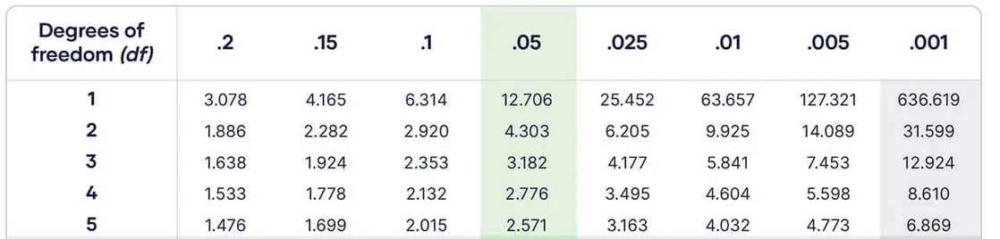
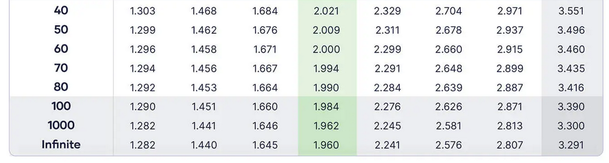
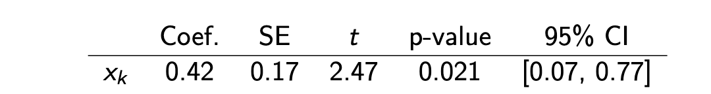
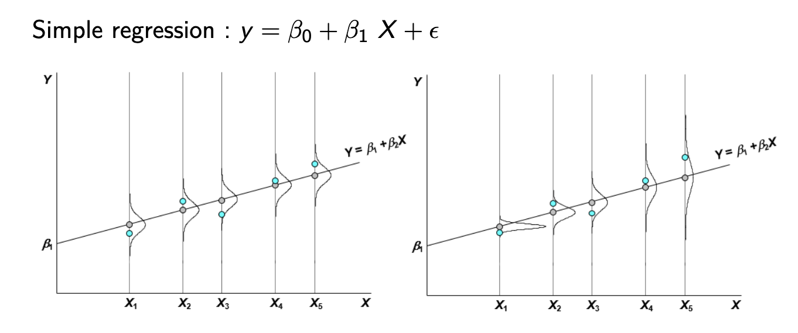
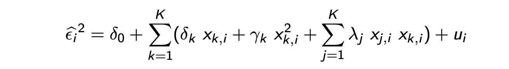

15.10.2026 Inference¶
Statistical inference: \(\hat{\beta}_0 \sim \beta_0\)?
are coeffients accurate representations of reality? (and to what extent)
True population: \(y_i = X_i \beta + \epsilon_i\)
Random Sample: \(\hat{y} = X_i \hat{\beta} + \hat{\epsilon_i}\)
Assumptions:
Linear in Parameters (not coefficients!): expressable by combining betas
Random Sampling: from true pop
No perfect multicollinearity: no regressor is combination of others
Zero Conditional Mean: \(E(\epsilon_i | X_i) = 0\)
Errors dont depend on any regressors
Implies: \(E(\epsilon) = 0\) (Errors are random and zero)
homoskedasticity: \(Var(\epsilon_i | X_i) = \sigma^2\)
Variance of Error is constant across observations
„typical error is same for all individuals“
e.g. wage ~ income learned:
for poor and rich people, average error is 5%
often unrealistic
Gauss-Markov-Theorem: under these assumptions, OLS is BLUE (Best linear unbiased estimator)
Standard Errors¶
= Precision of estimator
Standard Deviation = depends on true error
Standard Error = computed version from our estimates
Which is:
Whats \((X'X)^{-1}\)? = inverse matrix of regressors. basically a condensed version of the whole data table
For simple Regressions:
Better (lower) when:
higher n (larger sample with more information)
more variation in x
lower unexplained variation \(\sigma^2\)
t-statistic¶
„Is my sample and coefficient just luck?“
Test \(H_0: \beta_k = \beta_{k,0}\) (Null Hypothesis that beta = 0)
Then:
Numerator: Distance between estimate and null value
Denominator: Sampling uncertainty
t = how many SD is my estimate away from 0? (more = better)
Students t test¶
Usual test = \(H_0: \beta_k = 0\)
with \(\hat{t}_k = t_{n-K-1}\)
Student distribution of number of degrees of freedom (n-K-1)
Compare with t-table


Recipe: Test \(H_0: H_0: \beta_k = 0\) against \(H_a: \beta_k \neq 0\)
Choose significance level alpha (often 5%)
Compute df = n-K-1
Read the two-sided critical value: \(t_{1-a/2,df}\)
Compare with observed / calculation
\(|t_{obs}| > t_{1-a/2,df} \implies\) reject \(H_0\) (yayyy)
Note: One sided tests are seldomly used (Two side = default)
Standard values¶
for large samples| many degrees of freedom
1% confidence: 2.576
5% confidence: 1.96
10% confidence: 1.645
P-value¶
smallest significance value at which \(H_0\) would be rejected
e.g p-value = 0.65
level below 0.65 = fail to reject \(H_0\)
above: easy rejection
„how low can we go?“
Confidence Intervals¶
Confidence Intervals for the parameter
**Explanation:**for 5%:
if we repeat the sample 100 times, 95 times it would include the true \(\beta\)
Formula: \(\hat{\beta} \pm critival\ value \times SE\)
If 0 not in the bound = significant
Regression Table¶
In R, or somewhere else:

Coef: Estimate for \(\beta_0\)
SE = Standard Error
t = Coef / SE
p value = lowest possible confidence
CI = confidence intervalle (excludes 0)
for 5%: all state the same!
F-test¶
Test whether all variables (except \(\beta_0\)) together = explain variation
\(H_0\): all slopes are null: \(\beta_1 = \beta_2 = ... = 0\)
\(H_1\): at least one \(b_k \neq 0\)
Idea: if H0 holds, dropping betas doesnt change R2
ur = unrestricted (with additional vars)
r = restricted
q = number of restrictions (different from n, as we can also test a subset of vars)
Intuition
larger = better => reject \(H_0\)
Heteroskedasticity¶
Graphic example: Errors depend on regressor
Example: Variation in wages across education
lower educated = probably earn more in one income band
probbably errors are larger for higher educated
e.g bankers and social workers (both highly educated)

Breusch-Pagan Test¶
with the Breusch-Pagan Test
Estimate original OLS => \(\hat{e_i}\)
Square them => \(\hat{e}_i^2\)
Regress on x => \(X \sim \hat{e}^2_i\)
Test whether slope coefficients are jointly zero => \(\delta_1 = \delta_2 = ...=0\) (-> F-test)
If H0 holds = no relations = homoskedastic
White Test¶
fancy BP Test
include other functional forms of x (squared)
and interact with other explanatory vars

BP = White test with \(\gamma_k = 0; \lambda_j = 0\)
Correcting HSK with Robust SE¶
2 options:
OLS + robust standard errors (white matrix)
corrected estimator: Generalized Least Squares (GLS)
Focus on Robust SE
Robust SE = very fancy maths with matrix and sandwich
use these in all other calculations (except F!)
STATA:
reg y x1 x2 x3, vce(robust) // Robust SE
estat hettest // BP Test
estat imtest, white // White Test
Note: Coefficients are identical! only significance will change